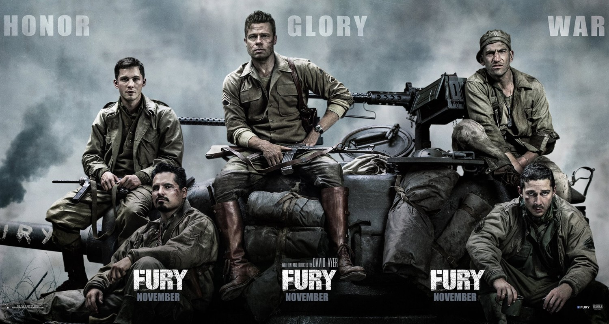
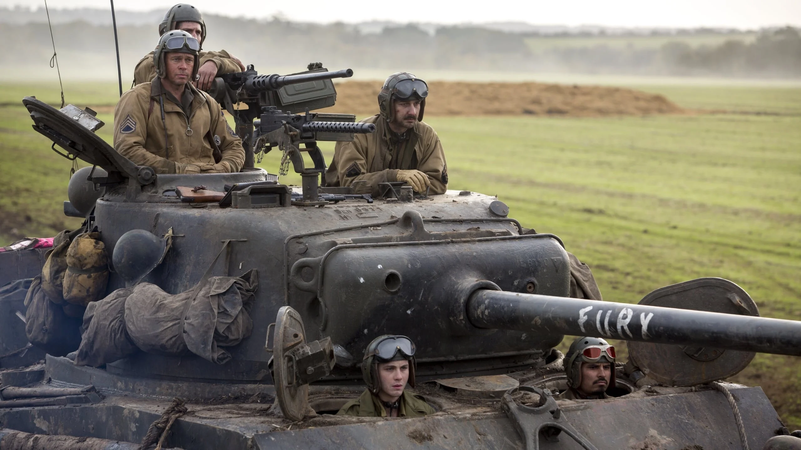

Fury, başrollerinde Brad Pitt, Logan Lerman ve Jon Bernthal gibi tanıdık yüzlerden oluşan ve 2014 yılında vizyona giren Amerikan savaş filmidir. Konusundan kabaca bahsedecek olursak İkinci Dünya Savaşı sırasında Amerika ve Almanya arasında yaşanan sert mücadeleleri, savaşın insanları neye dönüştürdüğünü, hayatı savaşta ve çatışmada geçen bir adamın arkadaşlarına ve hatta bir silaha olan bağlılığını gözler önüne seren bir film. Komutan Wardaddy, topçu Boyd Swan, yükleyici erbaş Grady Travis, şoför Trini Garcia ve ekibe yeni dahil olan acemi er Norman Ellison’dan oluşan üçüncü müfrezenin, 300 Alman askeriyle karşılaştığı ve tüm zorluklarla savaşmak zorunda kaldığı 24 saati izliyoruz.
Beş askerden oluşan ekip, Fury ismindeki zırhlı tanklarının paletinin kopması sonucu çatışmanın tam ortasında kalır. Ayrıca bu ekip, bölgede Amerikan askerlerinden oluşan son ekiptir. Ekip az sayıda askerden oluşmasının yanında mühimmat açısından da oldukça zor anlar yaşamıştır. Aldığı görevleri başarıyla tamamlamak isteyen Komutan Wardaddy’nin tek amacı, askerlerini Nazi birliklerinin kuşatması altında olan bu bölgeden sağ salim çıkarabilmek. Fury, savaşın etkilerini ilk dakikadan itibaren izleyiciye hissettirmeye başlıyor. Savaşın acımasızlığını, gerçekliğini, sertliğini ve romantizme yer olmadığını başarılı bir şekilde aktarıyor. Baştan sona oldukça sürükleyici bir şekilde ilerleyen filmde savaş ve tank sahneleri oldukça etkileyiciydi.
Film ara ara durgun ve dramatik ilerlese de son yarım saatte gerilime ve aksiyona oldukça doyuyorsunuz. Ama mantık hatalarının olmadığını da söylemeden geçemeyeceğim. Bunların en basiti ise 300 kişilik Alman ordusunun hasarlı ve 5 kişilik bir ekipten oluşan tanka karşı bu kadar uzun süre mücadele etmesi. Filmin bazı yerlerinde Amerikan ordusu övülmüş biraz. Hatta birkaç yerde hafif aşırıya kaçıldığını, askerlerin adeta süper kahraman gibi anlatıldığını da söyleyebiliriz ama bunlar gayet normal ve izleyiciyi rahatsız etmeyecek türden. Ayrıca film her ne kadar Nazileri kötülese de son sahnede onların da birer insan olduğunu, hepsinin aynı olmadığını gösteriyor bizlere.